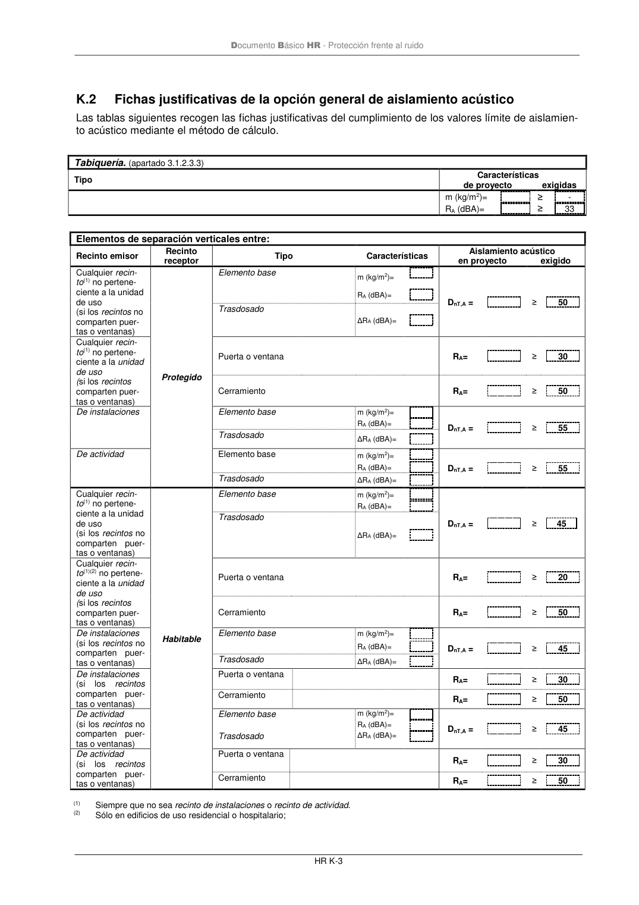

DB-HR · Página 77 · versión 2019-12-20
SHA256: a67baeca5138bb1f121f797d23a79a4557bd9ac4abacd954024893e05411eeab · página física 77 de 80 · métodos de encabezado
solo si están cotejados.
Formatos: Markdown · JSON de bloques · PDF p. 77 · imagen PNG
Documento Básico HR - Protección frente al ruido HR K-3 K.2 Fichas justificativas de la opción general de aislamiento acústico Las tablas siguientes recogen las fichas justificativas del cumplimiento de los valores límite de aislamien- to acústico mediante el método de cálculo. Tabiquería. (apartado 3.1.2.3.3) Tipo Características de proyecto exigidas m (kg/m2)= ≥ - RA (dBA)= ≥ 33 Elementos de separación verticales entre: Recinto emisor Recinto receptor Tipo Características Aislamiento acústico en proyecto exigido Cualquier recin- to(1) no pertene- ciente a la unidad de uso (si los recintos no comparten puer- tas o ventanas) Protegido Elemento base m (kg/m2)= DnT,A = ≥ 50 RA (dBA)= Trasdosado ΔRA (dBA)= Cualquier recin- to(1) no pertene- ciente a la unidad de uso (si los recintos comparten puer- tas o ventanas) Puerta o ventana RA= ≥ 30 Cerramiento RA= ≥ 50 De instalaciones Elemento base m (kg/m2)= DnT,A = ≥ 55 RA (dBA)= Trasdosado ΔRA (dBA)= De actividad Elemento base m (kg/m2)= DnT,A = ≥ 55 RA (dBA)= Trasdosado ΔRA (dBA)= Cualquier recin- to(1) no pertene- ciente a la unidad de uso (si los recintos no comparten puer- tas o ventanas) Habitable Elemento base m (kg/m2)= DnT,A = ≥ 45 RA (dBA)= Trasdosado ΔRA (dBA)= Cualquier recin- to(1)(2) no pertene- ciente a la unidad de uso (si los recintos comparten puer- tas o ventanas) Puerta o ventana RA= ≥ 20 Cerramiento RA= ≥ 50 De instalaciones (si los recintos no comparten puer- tas o ventanas) Elemento base m (kg/m2)= DnT,A = ≥ 45 RA (dBA)= Trasdosado ΔRA (dBA)= De instalaciones (si los recintos comparten puer- tas o ventanas) Puerta o ventana RA= ≥ 30 Cerramiento RA= ≥ 50 De actividad (si los recintos no comparten puer- tas o ventanas) Elemento base m (kg/m2)= DnT,A = ≥ 45 RA (dBA)= Trasdosado ΔRA (dBA)= De actividad (si los recintos comparten puer- tas o ventanas) Puerta o ventana RA= ≥ 30 Cerramiento RA= ≥ 50 (1) Siempre que no sea recinto de instalaciones o recinto de actividad. (2) Sólo en edificios de uso residencial o hospitalario;
